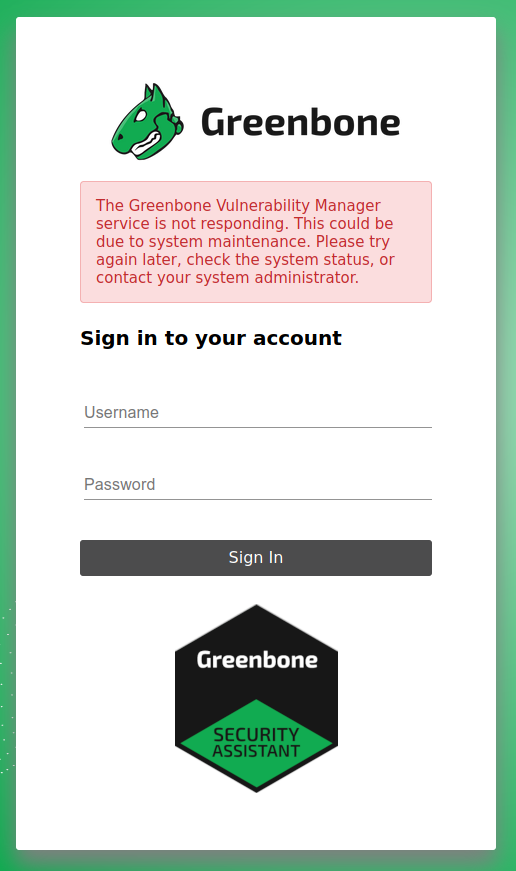

Troubleshooting#
VTs are Up-to-Date but Not Visible on the Web Interface#
It may be possible, especially for the initial synchronization, that the scanner does not notice new VT files have arrived. Therefore, it is best to restart the scanner.
Port List, Scan Configurations, Report Formats are Up-to-Date but Not Visible on the Web Interface#
If port lists, scan configurations, or report formats are missing on the web interface, you may run:
docker compose -f $DOWNLOAD_DIR/docker-compose.yml -p greenbone-community-edition \
exec -u gvmd gvmd gvmd --rebuild-gvmd-data=all
to force gvmd to reload the data from the file system.
Errors while starting pg-gvm container#
While starting up the pg-gvm container, some errors are displayed. For example
createuser: error: creation of new role failed: ERROR: role "gvmd" already exists
or ERROR: extension "uuid-ossp" already exists.
The code behind these errors tries to set up the database. If the database is already initialized, all tables, users, permissions and extensions exist, errors are raised. At the moment, it is not possible to silence these errors but they can be ignored safely.
osp_scanner_feed_version: failed to connect to /run/ospd/ospd-openvas.sock#
If the gvmd log contains this error, gvmd is not able to connect to the
ospd-openvas scanner. Most likely ospd-openvas is not running. Try to
restart the corresponding container with:
docker compose -f $DOWNLOAD_DIR/docker-compose.yml -p greenbone-community-edition \
restart ospd-openvas
If you still get errors, you need to take a look at the ospd-openvas logs.
docker compose -f $DOWNLOAD_DIR/docker-compose.yml -p greenbone-community-edition \
log -f ospd-openvas
Cannot Log in to the Web Interface: Greenbone Vulnerability Manager service is not responding#
If it is not possible to log in to the web interface and the following error message is shown
{kind=link}
and/or the logs contain a Failed to connect to server at /run/gvmd/gvmd.sock: Connection refused
message, the gvmd container must be restarted. It is very likely it
had some issues accessing the PostgreSQL database.
Redis Server keeps restarting rm: cannot remove ‘/run/redis/redis.sock’: Permission denied#
Under some circumstances the Unix Domain Socket
of the redis server has got wrong permissions. To fix this issue it is required
to shutdown the redis-server and ospd-openvas containers and remove the
redis_socket_vol docker volume.
The volume can be removed safely because it gets re-created on the next startup.
docker compose -f $DOWNLOAD_DIR/docker-compose.yml -p greenbone-community-edition \
rm -s -f redis-server ospd-openvas
docker volume rm greenbone-community-edition_redis_socket_vol
docker compose -f $DOWNLOAD_DIR/docker-compose.yml -p greenbone-community-edition \
up -d